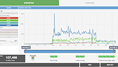
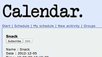
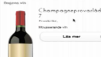
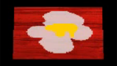
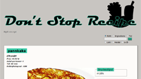
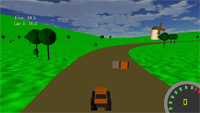

Master Thesis Project

Spring 2013. Twingly AB
This is the result of my Master Thesis Project, executed through the Master's of Science in Media Technology and Engineering Program at Campus Norrköping, Linköping University. Made a statistics dashboard for Twingly's customers using information visualization, web development och usability principles. Used technologies such as Sinatra, Javascript, PostgreSQL, Sequel, MySQL, mSQL, Haml, HTML5, CSS3, Twitter Bootstrap, Rickshaw (d3.js), AMQP, EventStream, jQuery.
Oscar Persson & Gabriella Ivarsson
Screencast | Report
This is the result of my Master Thesis Project, executed through the Master's of Science in Media Technology and Engineering Program at Campus Norrköping, Linköping University. Made a statistics dashboard for Twingly's customers using information visualization, web development och usability principles. Used technologies such as Sinatra, Javascript, PostgreSQL, Sequel, MySQL, mSQL, Haml, HTML5, CSS3, Twitter Bootstrap, Rickshaw (d3.js), AMQP, EventStream, jQuery.
Oscar Persson & Gabriella Ivarsson
Screencast | Report
Calendar - Project in Document Structures

Autumn 2012. TNM065 Document Structures.
Calendar is a web based system used to keep track of yours and other peoples activities. With a username and password you can create activities, subscribe to other peoples activities, join groups and see your schedule. Implemented in PHP, HTML, XSL, WML, DTD, MySQL and CSS.
Screencast
Calendar is a web based system used to keep track of yours and other peoples activities. With a username and password you can create activities, subscribe to other peoples activities, join groups and see your schedule. Implemented in PHP, HTML, XSL, WML, DTD, MySQL and CSS.
Screencast
Vinkällaren - Project in Advanced Web Programming

Spring 2012. TDDD27 Advanced Web Programming
Vinkällaren is a web application for mobile phones and can be used to find and save wines from the Swedish Alcohol Retailing Monopoly database. The frameworks used are JQuery Mobile and Ruby on Rails.
Screencast
Vinkällaren is a web application for mobile phones and can be used to find and save wines from the Swedish Alcohol Retailing Monopoly database. The frameworks used are JQuery Mobile and Ruby on Rails.
Screencast
Modelling of egg that falls and crashes - Modelling project

Spring 2011. TNM085 Modelling project.
Modelling of egg, implemented in C++, OpenGL and glut.
Watch clip of modelling.
Modelling of egg, implemented in C++, OpenGL and glut.
Watch clip of modelling.
Don't Stop Recipe - Database project

Autumn 2010. TNM055 Databases.
Recipe database written in MySQL, php and html.
Recipe database written in MySQL, php and html.
MTracer

Spring 2010. TNM061 3D Computer Graphics.
Car game writen in XNA with 3D models modelled in 3D Studio Max.
Download files
Car game writen in XNA with 3D models modelled in 3D Studio Max.
Download files